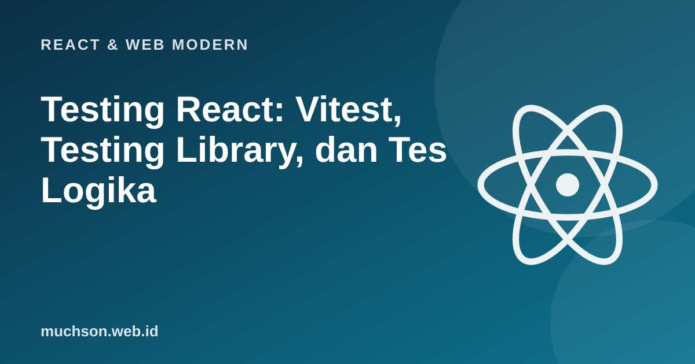

Beranda › Artikel › React & Web Modern
React & Web ModernTesting React: Vitest, Testing Library, dan Tes Logika
Tes otomatis membuat Anda berani mengubah kode tanpa takut merusak yang lain. Di React, kesalahan umum adalah menguji detail implementasi (nama state, jumlah render) sehingga tes pecah setiap kali kode dirapikan. Pendekatan yang benar: uji apa yang dilihat dan dilakukan pengguna, dan pisahkan logika murni agar mudah diuji tanpa React.
Sebaiknya sudah paham: React dasar, useState, fungsi JavaScript

Setelah membaca dan mencoba materi ini, Anda mampu:
- menentukan apa yang layak diuji dan jenis tes yang tepat
- menulis tes logika murni dengan test runner
- menulis tes komponen dengan Vitest dan Testing Library (perilaku pengguna)
- memakai mock untuk jaringan dan waktu
- menghindari tes rapuh yang menguji implementasi
Apa yang diuji
Prinsip Testing Library: "Semakin mirip tes Anda dengan cara perangkat lunak dipakai, semakin besar keyakinan yang diberikannya." Cari elemen seperti pengguna mencarinya (berdasarkan teks, label, peran), bukan berdasarkan kelas CSS atau struktur internal.
Tes unit untuk logika murni
Logika murni (fungsi tanpa efek samping) adalah tempat tes paling murah dan paling berharga. Berikut dijalankan dengan pelari tes mini yang kita tulis sendiri; bentuk test(nama, fn) dan asersinya sama dengan di Vitest dan Jest.
const assert = require('node:assert/strict');
// Pelari tes mini: gagasannya sama dengan test() di Vitest/Jest
let lulus = 0, gagal = 0;
function test(nama, fn) {
try { fn(); console.log(' LULUS ', nama); lulus++; }
catch (e) { console.log(' GAGAL ', nama, '\n diharapkan:', e.expected, '| aktual:', e.actual); gagal++; }
}
function hitungDiskon(total, anggota) {
if (total < 0) throw new RangeError('total tidak boleh negatif');
let diskon = 0;
if (total >= 500_000) diskon += 0.10;
if (anggota) diskon += 0.05;
return Math.round(total * (1 - diskon));
}
test('tanpa diskon di bawah ambang', () => assert.equal(hitungDiskon(100_000, false), 100_000));
test('diskon 10% mulai 500 ribu', () => assert.equal(hitungDiskon(500_000, false), 450_000));
test('anggota menambah 5%', () => assert.equal(hitungDiskon(500_000, true), 425_000));
test('nilai batas: 499.999 belum diskon', () => assert.equal(hitungDiskon(499_999, false), 499_999));
test('total negatif ditolak', () => assert.throws(() => hitungDiskon(-1, false), RangeError));
test('uji yang sengaja gagal', () => assert.equal(hitungDiskon(1_000_000, false), 1_000_000));
console.log(lulus + ' lulus, ' + gagal + ' gagal'); LULUS tanpa diskon di bawah ambang
LULUS diskon 10% mulai 500 ribu
LULUS anggota menambah 5%
LULUS nilai batas: 499.999 belum diskon
LULUS total negatif ditolak
GAGAL uji yang sengaja gagal
diharapkan: 1000000 | aktual: 900000
5 lulus, 1 gagalTes komponen dengan Testing Library
npm install -D vitest jsdom @testing-library/react @testing-library/user-event @testing-library/jest-dom// vite.config.js : tambahkan test: { environment: 'jsdom', setupFiles: './src/setupTests.js', globals: true }
// src/setupTests.js : import '@testing-library/jest-dom/vitest';
// Penghitung.jsx
export function Penghitung({ awal = 0 }) {
const [n, setN] = useState(awal);
return (
<div>
<p>Jumlah: {n}</p>
<button onClick={() => setN(n + 1)}>Tambah</button>
<button onClick={() => setN(0)}>Reset</button>
</div>
);
}
// Penghitung.test.jsx
import { render, screen } from '@testing-library/react';
import userEvent from '@testing-library/user-event';
import { Penghitung } from './Penghitung';
test('menambah jumlah saat tombol diklik', async () => {
const pengguna = userEvent.setup();
render(<Penghitung awal={2} />);
expect(screen.getByText('Jumlah: 2')).toBeInTheDocument();
await pengguna.click(screen.getByRole('button', { name: 'Tambah' })); // cari berdasarkan peran + nama
expect(screen.getByText('Jumlah: 3')).toBeInTheDocument();
await pengguna.click(screen.getByRole('button', { name: 'Reset' }));
expect(screen.getByText('Jumlah: 0')).toBeInTheDocument();
});Urutan prioritas mencari elemen
| Query | Kapan | Mengapa |
|---|---|---|
| getByRole("button", { name: "Simpan" }) | Hampir selalu | Sama dengan cara teknologi bantu membaca halaman; sekaligus menguji aksesibilitas |
| getByLabelText("Surel") | Kolom form | Menguji bahwa label terhubung ke input |
| getByText("...") | Teks yang terlihat | |
| getByTestId("...") | Pilihan terakhir | Tidak berarti bagi pengguna; pakai bila tak ada cara lain |
Menguji hal asinkron dan jaringan
import { render, screen } from '@testing-library/react';
import { vi } from 'vitest';
test('menampilkan produk setelah data tiba', async () => {
// tiruan fetch: tidak menyentuh jaringan sungguhan
vi.stubGlobal('fetch', vi.fn().mockResolvedValue({
ok: true,
json: async () => [{ id: 1, nama: 'Kopi Gayo' }],
}));
render(<DaftarProduk />);
expect(screen.getByText('Memuat...')).toBeInTheDocument();
expect(await screen.findByText('Kopi Gayo')).toBeInTheDocument(); // findBy* menunggu elemen muncul
});
test('menampilkan pesan galat saat server gagal', async () => {
vi.stubGlobal('fetch', vi.fn().mockResolvedValue({ ok: false, status: 500 }));
render(<DaftarProduk />);
expect(await screen.findByRole('alert')).toHaveTextContent('Gagal memuat');
});// Jam palsu: kita yang menggerakkan waktu, jadi tes tidak benar-benar menunggu
function buatJamPalsu() {
let sekarang = 0, id = 0; const tugas = new Map();
return {
setTimeout: (fn, ms) => { tugas.set(++id, { fn, waktu: sekarang + ms }); return id; },
clearTimeout: i => tugas.delete(i),
tick(ms) {
sekarang += ms;
for (const [i, t] of [...tugas]) if (t.waktu <= sekarang) { tugas.delete(i); t.fn(); }
},
};
}
function buatDebounce(fn, ms, jam) { let id; return (...a) => { jam.clearTimeout(id); id = jam.setTimeout(() => fn(...a), ms); }; }
const jam = buatJamPalsu();
const panggilan = [];
const cari = buatDebounce(k => panggilan.push(k), 300, jam);
cari('r'); cari('re'); cari('rea');
jam.tick(299);
console.log('setelah 299 ms :', JSON.stringify(panggilan), '(belum waktunya)');
jam.tick(1);
console.log('setelah 300 ms :', JSON.stringify(panggilan), '(hanya nilai terakhir)');setelah 299 ms : [] (belum waktunya)
setelah 300 ms : ["rea"] (hanya nilai terakhir)Menghindari tes rapuh
| Hindari | Lakukan |
|---|---|
| Memeriksa state internal atau nama fungsi | Memeriksa teks, peran, dan hasil yang terlihat |
| Memilih elemen dengan kelas CSS atau urutan DOM | Memilih dengan role, label, atau teks |
| Memanggil fireEvent langsung pada banyak hal | user-event yang meniru interaksi nyata |
| Snapshot besar yang selalu diperbarui tanpa dibaca | Asersi spesifik pada hal yang penting |
| Mock berlebihan sampai tes tak menguji apa pun | Mock hanya batas luar (jaringan, waktu), uji sisanya sungguhan |
1. Tulis tes untuk fungsi format Rupiah yang menguji 0, 1000, 1234567, dan nilai negatif.
2. Mengapa tes yang memeriksa nama state internal rapuh?
3. Kapan memakai tes end-to-end dibanding tes komponen?
4. Apa itu regresi dan bagaimana tes mencegahnya?
- Piramida: banyak tes logika murni, cukup banyak tes komponen, sedikit end-to-end.
- Uji perilaku yang terlihat pengguna dengan Testing Library; cari lewat role, label, teks.
- Kendalikan jaringan dan waktu dengan mock dan jam palsu.
- Hindari menguji implementasi dan snapshot membabi buta; jalankan tes di CI.
Tanya jawab
Vitest atau Jest?
Berapa cakupan kode (coverage) yang ideal?
Apa itu Playwright?
Referensi
- Vitest Documentation
- Testing Library: React
- Node.js: Test runner
- Kent C. Dodds: Common mistakes with React Testing Library